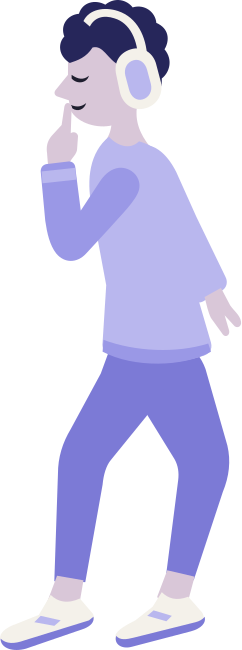
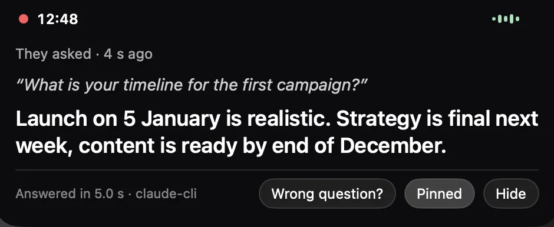
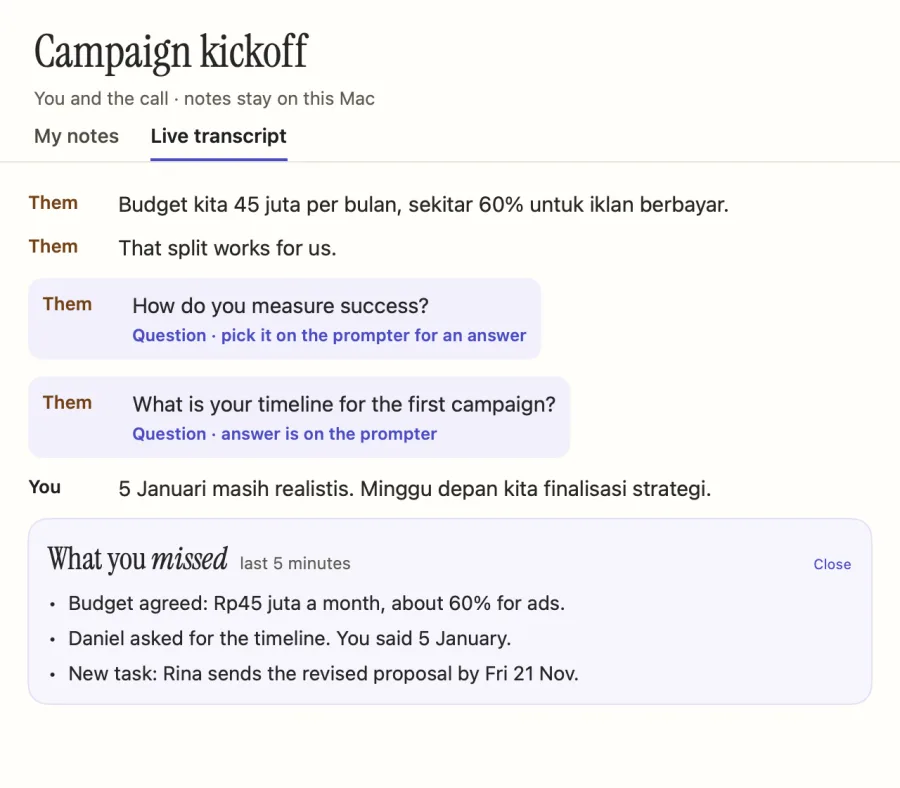
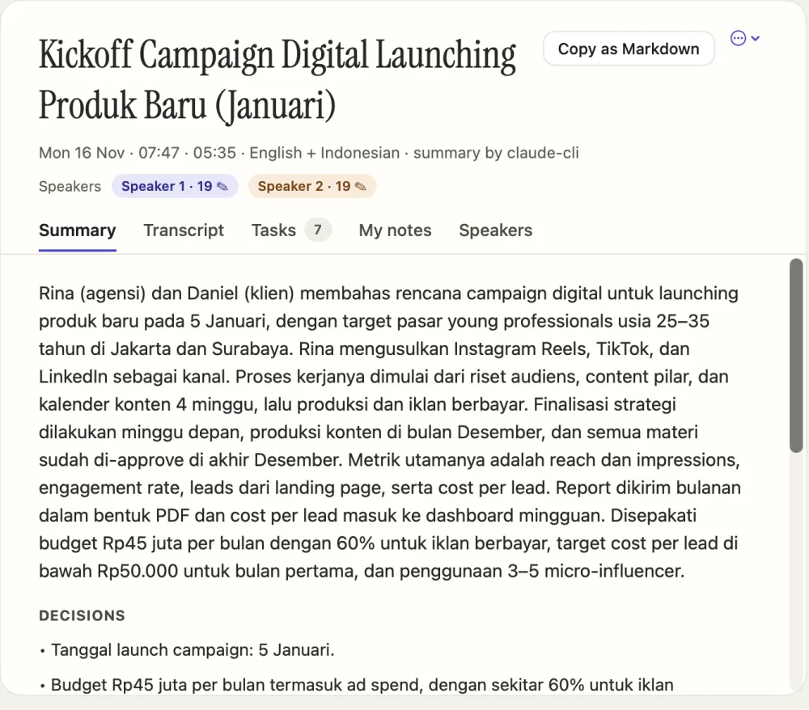

Notulen meeting otomatis di Mac, tanpa bot yang ikut join. Kalau tiba-tiba ditanya, saran jawaban muncul di layarmu.



Hush menangkap pertanyaan dari lawan bicara, lalu menulis saran jawaban dari catatanmu dan obrolan barusan. Jawabannya muncul di bawah notch. Dengan Gemini, kata pertamanya biasanya keluar dalam satu detik.

Panel ini hanya untukmu. Di tes kami, ia tidak ikut tertangkap screenshot dan rekaman layar standar macOS. Tetap cek dulu sebelum share seluruh layar, karena aplikasi meeting bisa punya cara rekam sendiri.
Video 30 detik (bahasa Inggris).

Hush mendengar suaramu dan suara lawan bicara dari Zoom, Google Meet atau Teams. Transkripnya jalan selama meeting. Melamun sebentar? Tekan "What did I miss?" untuk ringkasan 5 menit terakhir.
Tidak perlu menulis apa-apa selama call. Begitu kamu klik Stop, Hush menyusun:
Semua meeting bisa dicari: kata, nama orang, atau tugas. Salin sebagai Markdown ke Notion atau dokumen lain.

Isi kartu ini. Pengguna Mac bisa langsung pasang. Pengguna Windows kami kabari lewat email. Jumlah pendaftar Windows yang menentukan apakah versi Windows dibuat.